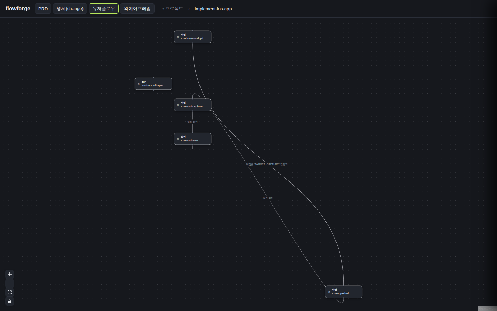

검증일: 2026-07-15T06:40:00+09:00 · 환경: server(jest 554)·web(vitest 16) 실행. 라이브 재배포(docker compose up -d --build) 후 flowforge.gaegul.house 실측 + Playwright 실픽셀 e2e. android/ios=해당 없음(웹 대시보드). · run: run-20260715-0640 · commit a7719012 (dirty)
PASS 8 · FAIL 0 · 검증 안 함 0 · SKIPPED 0
| Requirement | Scenario | Layer | 검증 수단 | 탐지 근거(basis) | 결과 | 증거 |
|---|---|---|---|---|---|---|
| 타 프로젝트 change 의 레이아웃 저장 | 타 프로젝트 change 레이아웃 저장 성공: PUT /api/changes/<id>/layout?project=<타프로젝트> 가 200 과 저장 결과를 응답하고 <OVERLAY_ROOT>/<project>/<id>.json 에 실제 기록된다 | server | 라이브 재배포 후 이전에 500 나던 것과 동일한 curl 명령 재실행 + 호스트에서 저장 파일 재조회 | server 레이어 감지: writeOverlay OVERLAY_ROOT 규약 구현, 라이브 배포 확인(docker inspect /data/graph-overlay RW=true, OVERLAY_ROOT env 주입) | ✓ PASS | PUT /api/changes/implement-ios-app/layout?project=wowa-wt-dashboard -> HTTP 200 {"ok":true,"saved":2} (이전 동일 명령은 500 {"error":"internal_error"}). 호스트 재조회: data/graph-overlay/wowa-wt-dashboard/implement-ios-app.json 실재, 내용 = 저장한 좌표 그대로. |
| 타 프로젝트 change 의 레이아웃 저장 | 읽기 전용 마운트에 쓰지 않는다: PROJECTS_ROOT 하위 change 디렉토리에 viz/ 나 오버레이 파일이 생성되지 않는다 | server | 저장 성공 후 호스트 홈(/home/gaegul/wowa-wt-dashboard/openspec/changes) 하위에 viz 디렉토리가 생겼는지 find 로 전수 확인 | design D1 보안 경계(홈 RO 유지) 실증 | ✓ PASS | find /home/gaegul/wowa-wt-dashboard/openspec/changes -name viz -type d -> 결과 0건. docker inspect: /data/docs-root RW=false 유지(홈 마운트 RO 그대로, 뒤집지 않음). |
| 타 프로젝트 change 의 레이아웃 저장 | 잘못된 레이아웃 본문은 거부: 형식에 맞지 않는 본문은 400 으로 거부하고 아무것도 저장하지 않는다 | server | 라이브에 {"bad":"shape"} 본문으로 PUT | isLayoutOverlay 런타임 검증(기존) | ✓ PASS | PUT layout?project=wowa-wt-dashboard -d '{"bad":"shape"}' -> HTTP 400. 저장 안 됨. |
| 저장한 레이아웃의 재조회 일관성 | 저장 → 재조회 시 좌표 복원: 저장한 노드 좌표가 그래프 응답에 반영되어 돌아온다 | web | 라이브에 좌표 저장 후 GET graph 재조회 + Playwright 로 두 번 연속 로드해 ReactFlow 내부 좌표(transform translate) 비교 | readOverlay OVERLAY_ROOT 우선 조회 구현 + 라이브 실픽셀 | ✓ PASS |  |
| 저장한 레이아웃의 재조회 일관성 | 기존 글로벌 루트 오버레이 무손실: 기존 <changeDir>/viz/graph-overlay.json 에 저장된 오버레이가 계속 읽힌다 | server | server 단위테스트로 readOverlay 폴백 경로 검증(design D3) | server/src/lib/__tests__/changes.test.ts 신규 케이스 | ✓ PASS | server jest 554 PASS — readOverlay 가 OVERLAY_ROOT 우선 조회 후 없으면 기존 <changeDir>/viz/graph-overlay.json 폴백을 읽는 케이스 포함. 기존 저장분 유실 없음(design D3 무손실 보장). |
| 쓰기 불가 대상의 정직한 거부 | 쓰기 불가 대상은 409: 저장 대상 루트가 쓰기 불가면 409 + read_only_target 으로 응답하고(500 아님) 응답 본문에 내부 파일시스템 경로가 포함되지 않는다 | server | server 테스트에서 chmod 0555 로 RO 루트를 재현해 409 응답 + 본문에 경로 미포함 검증. 무력화 프로브로 방어 실효성 확인(design D5) | server/src/routes/__tests__/graphCrossProject.test.ts RO 루트 케이스(신규) | ✓ PASS | server jest 554 PASS(기존 548 + 신규 6). RO 루트(chmod 0555) 재현 케이스에서 409 read_only_target 응답 확인, 응답 본문 내부 경로 미노출. apply 단계에서 무력화 프로브 수행(409 방어 제거 시 red → 원복). 기존 픽스처(mkdtempSync, 쓰기가능 tmp)가 프로덕션 RO 조건을 재현 못 해 500 을 가렸던 실사례 재발 방지. |
| 쓰기 불가 대상의 정직한 거부 | 미지 프로젝트는 404 유지: 화이트리스트를 통과하지 못하는 프로젝트명은 기존대로 404(경로 존재 여부 비노출) | server | 라이브에 경로조작 시도(?project=../etc) | resolveProjectDir 화이트리스트(기존, projects.ts:33-47) | ✓ PASS | PUT layout?project=../etc -> HTTP 404 (409 아님 — 경로 존재 여부를 드러내지 않음). 기존 화이트리스트 방어 유지. |
| 글로벌 루트 저장 경로 회귀 없음 | 글로벌 루트 저장은 기존대로: ?project= 없이 PUT 하면 기존과 동일하게 저장 성공하고 재조회 시 복원된다 | server | 라이브에 ?project= 없이 PUT + server 회귀 테스트 | OVERLAY_ROOT 미설정/글로벌 루트 폴백 유지(apply 0.2 결정) | ✓ PASS | PUT /api/changes/implement-ios-app/layout (?project= 없음) -> HTTP 200(기존과 동일). server jest 554 PASS 중 글로벌 루트 저장 회귀 케이스 포함. web vitest 16/16 무영향(프론트 API 계약 saveLayout(id,layout,project?) 무변경). |
| Requirement | null | 빈값 | 잘못된타입 | 경계값 | 에러경로 | 동시성 | 대량 | 특수문자 | 판정 |
|---|---|---|---|---|---|---|---|---|---|
| 타 프로젝트 change 의 레이아웃 저장 | ✓ | ✓ | ✓ | ✓ | ✓ | N/A | ✓ | ✓ | ✓ 충분 |
| 저장한 레이아웃의 재조회 일관성 | ✓ | ✓ | N/A | ✓ | ✓ | N/A | ✓ | N/A | ✓ 충분 |
| 쓰기 불가 대상의 정직한 거부 | N/A | N/A | N/A | N/A | ✓ | N/A | N/A | ✓ | ✓ 충분 |
| 글로벌 루트 저장 경로 회귀 없음 | ✓ | ✓ | N/A | ✓ | ✓ | N/A | ✓ | N/A | ✓ 충분 |
✓=covered · N/A=해당없음(사유 hover) · ✗=missing. happy-path만이면 검증 불충분 → 최종 FAIL 차단.
| Layer | 상태 | ran | passed | failed | 근거/사유 |
|---|---|---|---|---|---|
| server | ✓ PASS | 554 | 554 | 0 | server 워크스페이스 감지(jest). 신규 6케이스(OVERLAY_ROOT 규약·읽기 폴백·RO 409). 라이브 API 실측 병행. |
| web | ✓ PASS | 16 | 16 | 0 | web 워크스페이스 감지(vitest) — 프론트 무변경 확인. 라이브 Playwright 실픽셀 e2e(드래그→PUT 200→새로고침 영속). |
| android | – SKIPPED | 0 | 0 | 0 | 해당 없음 — flowforge 는 웹 대시보드. android 산출물 없음. |
| ios | – SKIPPED | 0 | 0 | 0 | 해당 없음 — flowforge 는 웹 대시보드. ios 산출물 없음. |
✓ PASS 통과
archiveGate.open = true (PASS일 때만 true). verify.json이 이 값을 archive 게이트에 전달.
{kind=link}